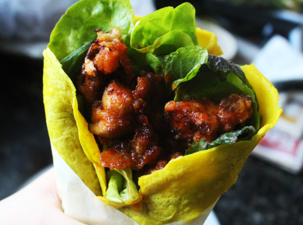

This is Sōma's innovative dish which is served to repel the vicious urban residential planner, Yaeko Minegasaki from destroying Restaurant Yukihira. Even when after all the meat materials were sabotaged in his kitchen, Sōma managed to turn the tides by using some of the groceries as his ingredients to create artificial meat.
